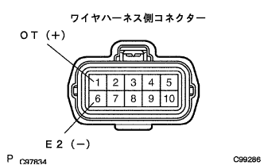
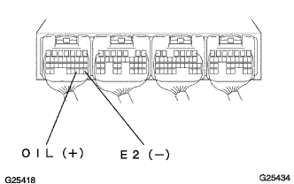
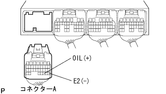

DTC P0710/38 oil temperature sensor system |
| DTC No. | DTC detection conditions 1. Diagnosis conditions 2. Abnormal state 3. Abnormal state | Inspection site |
|---|---|---|
| P0710/38 |
|
|
| Step 1 | Trans mission wire single inspection (oil temperature sensor) |
Cut the transmission wire connector.
 |
Use SST (Toyota Electrical Tester) to check the resistance between terminals.
| Terminal number (terminal symbol) | Oil temperature [° C] | Resistance value [kΩ] |
|---|---|---|
| 1 (OT) ← → 6 (E2) | 10 | 6.4 |
| 1 (OT) ← → 6 (E2) | 110 | 0.2 |
Inspect the insulation of the terminal using SST (Toyota Electrical Tester).
| Terminal number (terminal symbol) | Resistance value |
|---|---|
| 1 (OT) ← → Body Earth | 1mΩ or higher |
|
| ||||
| OK | |
| Step 2 | Tascan data reading (at oil temperature) |
Connect a transmission wire connector.
Use SST (Tascan) to operate according to the screen display, display the [ECU data monitor] screen and check the computer data.
| Item name [symbol] | Item explanation | Inspection condition | Reference value | Inspection items in the event of an abnormality |
|---|---|---|---|---|
| AT oil temperature [THO] | Express ATF oil temperature Load range: -40-215 ° C C | IG ON | -40 ° C (Sensor disconnection) | OIL voltage |
| AT oil temperature [THO] | Express ATF oil temperature Load range: -40-215 ° C C | IG ON | 150 ° C (Sensor short circuit) | OIL voltage |
| Oil temperature | procedure |
|---|---|
| -40 ° C | To step A |
| 150 ° C | To step B |
|
| ||||
| A | |
| Step 3 | Tascan data reading (oil temperature sensor disconnection inspection) |
Cut the transmission wire connector.
|  |
Use SST to short circuit between 1 (OT) and 6 (E2) of the wire harness connector.
Turn on the ignition switch.
Use SST (Tascan) to check the oil temperature displayed on the [ECU data monitor] screen.
|
| ||||
| NG | |
| Step 4 | Tascan data reading (engine control computer internal disconnection inspection) |
|  |
Use SST to short -circuit the A30 (OIL) terminal ← → A28 (E2) terminals of the engine control computer.(The terminal array isreference)
Turn on the ignition switch.
Use SST (Tascan) to check the oil temperature displayed on the [ECU data monitor] screen.
|
| ||||
| OK | ||
| ||
| Step 5 | Wire harness or connector inspection (transmission wire-engine control computer) |
Turn off the ignition switch.
Cut the connector A and transmission wire connector of the engine control computer.
|  |
Use SST (Toyota Electrical Tester) to inspect the insulation of wire harness.(The terminal array isreference)
| Terminal number (terminal symbol) | Resistance value |
|---|---|
| A30 (OIL) ← → A28 (E2) | 1mΩ or higher |
| A30 (OIL) ← → Body Earth | 1mΩ or higher |
|
| ||||
| OK | ||
| ||